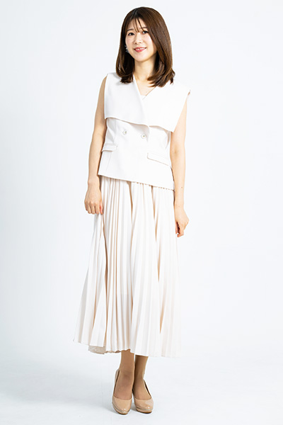

PROFILE
山口 由恵



山口 由恵Yoshie Yamaguchi
| カテゴリ | MC/司会、モデル、コンパニオン |
|---|---|
| 地域 | 関東 |
| 身長 | 162cm |
| 趣味 | スノーボード、漫画を読むこと |
| 特技 | 着付け |
| 資格 | 理学療法士免許 |
| SNS |
経歴
【WEB】
- 無垢スタイル建築設計YouTubeルームツアーリポーター
- AI Market Channelウェビナープレゼンター
- 大成建設「仙味エキス株式会社施工事例」紹介動画ナレーション
【展示会】
- Data Center Summit 2026/DELL
- 自治体公共Week/日東工業
- インターフェックス/大成建設
- JECAFAIR2026/クラフティア
- Japan IT Week/ソフマップ
- HCJ2026/楽天トラベルサービス
- セミコンジャパン/NSK
- ビルメンヒューマンフェア2025/ケルヒャージャパン
- CC/CRM2025/ベリントシステム
- 地方自治情報化推進フェア/CEC
- くらしと街のコンシェルジュ/大成建設
- Japan IT Week 2025春/デル・テクノロジーズ
- AWS Summit Japan 2025/サーバーワークスMCCO
- プライズフェア
- FIT展・物流展/プリマジェストMCCO
- EdgeTech+/STマイクロエレクトロニクスMCCO
- コールセンター/ベリントMCCO
【イベント】
- パグフェス
- キャバリアフェス
- guigui量販店発売イベント
- プードルフェス2025
- シタマチ文化祭
- キヤノンイベント＠ビックカメラ
- ASUSイベント＠ビックカメラ
- NHK 4KプロモーションMCCO
- LondonDogFestival
- キリンビール体験イベント
【セミナー】
- AIマーケットカンファレンス2026 ウェビナー＆懇親会
【モデル】
- もみの匠 ストレッチ紹介TikTok動画
- AIマーケットサービス紹介YouTubeショート動画
- 資生堂メイクモデル
- 写真スタジオ カメラ講座モデル
- defineファンデーション
- プラバドール 着画モデル
【ステージアテンド】
- 全国ビルメンテナンス協会設立60周年記念式典
- 特許庁知財功労賞表彰式ステージアテンド
- 叶会ステージアテンド
【コンパニオン】
- ル・ボラン カーズ・ミート/ランボルギーニ
- エコプロダクツ/JFEグループ
- 東京モーターショー/JAF
- 第10回医療連携フォーラム/アステラス製薬
- オートサロン/NGK
- モーターサイクルショー/NGK（大阪、名古屋、東京）
- SuperGT motoGP/NGK（年間）
- キャンピングカーショー/パナソニック
- IT Week 秋/技研商事インターナショナル
- ホテルレストランショー/富士工業所
- ツーリズムEXPO/マレーシア
- グラブルフェス
- JTたばこナイトプロモーション
- サマーソニック/グレンモーレンジ
- トラックショー/日本製鉄
- ボードショー/LCカード
- 東京ゲームショウ/cluster
- ジャパンモビリティショー/SUZUKI
- 名古屋モビリティーショー/SUZUKI
- 福岡モビリティーショー/SUZUKI
- GUCCIポップアップイベント 他多数